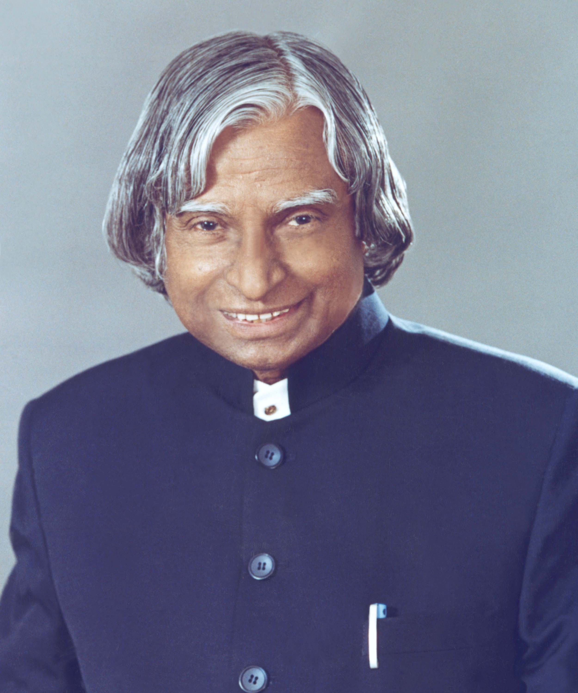

1931
The Beginning
Abdul Kalam was born on 15 October 1931 in Rameswaram, Tamil Nadu, into a humble family.
A TRIBUTE TO
The Missile Man of India
Scientist. Teacher. Visionary. The People's President who inspired millions of young minds to dream big and work towards a better India.

Dr. Avul Pakir Jainulabdeen Abdul Kalam was one of India's most respected scientists, educators and statesmen.
Born on 15 October 1931 in Rameswaram, Tamil Nadu, Kalam came from a modest background. His early life taught him the value of hard work, discipline and perseverance.
He played a major role in India's space and missile development programmes. His contribution to India's defence and space research earned him the popular title "Missile Man of India."
In 2002, Kalam became the 11th President of India. Despite reaching one of the highest positions in the country, he remained deeply connected with students and young people.
He believed that young minds could transform the nation through knowledge, creativity and determination.
Abdul Kalam was born on 15 October 1931 in Rameswaram, Tamil Nadu, into a humble family.
Kalam joined India's space research efforts and contributed to the development of launch vehicle technology.
Under his leadership, the SLV-III successfully placed the Rohini satellite into near-Earth orbit.
Kalam became closely associated with India's missile development programmes and national defence technology.
He became the 11th President of India and served the nation from 2002 to 2007.
Kalam passed away on 27 July 2015 while delivering a lecture to students at IIM Shillong.
India awarded Kalam its highest civilian honour, the Bharat Ratna, in 1997.
He received the Padma Vibhushan in recognition of his contributions to science and engineering.
Kalam was honoured with the Padma Bhushan in 1981.
His connection with ordinary citizens and especially students earned him immense popularity as the People's President.
Dream, dream, dream. Dreams transform into thoughts and thoughts result in action.
Kalam's greatest legacy was not only the technology he helped create, but the dreams he planted in millions of young minds.
He travelled extensively across India, meeting students and encouraging them to pursue science, innovation and meaningful goals.
His books, speeches and interactions continue to inspire students, educators and aspiring innovators around the world.
For many Indians, Dr. Kalam represents the idea that humble beginnings should never limit the size of one's dreams.